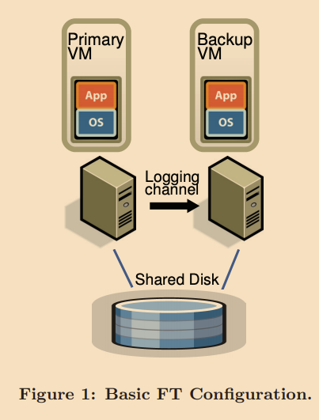

本文是我在阅读这篇论文过程中的笔记，以及一些自己的思考。
概述
本文主要介绍了一个如何构建一个具有容错能力的虚拟机主从集群。
这个论题具有极高的价值，因为这里试图容错备份的不是应用，而是整个虚拟机，理论上来说只要能实现虚拟机级别的高效容错性，那么就能让所有在虚拟机上运行的所有应用都有了同级别的容错性，并且这种容错性是对应用透明的。
一般对于一个虚拟机的同步备份有两种方式：
- 同步状态转移：即同步的内容为整个内存的全部内容，以及各种寄存器的值等等。可以想象这种方式就是当primary有改变发生时，可能就是将变更的那块内容发给副本，然后副本直接修改对应的内存等状态。可以想象该种方式可能会占用大量带宽，因为他同步的是数据。
- 同步状态机：该方式认为只要两个机器有一个相同的初始状态，那么只要此后能够接受相同的输入，得到的机器状态应该是一样的。相对于前一种同步方式，该方式同步的是操作，所以能让带宽使用减少，基本上能保证机器间的通信速率和客户端与primary通信的速率相当。
本文采用的是方式二。
该论文只解决fail-stop类型的错误，即一旦发生错误就立即停止执行的错误，比如断电，断网之类。像软件层面的bug这种会产生错误数据的错误是无法防护的。
环境假设
本文的实现环境有以下特点：
- 客户端只和primary交互。
- 客户端和primary VM的交互是通过网络。
- primary VM和副本VM之间的交互也是通过网络。
- primary和副本VM往往不在同一台物理机器上，但是他们共享一个外部的可靠的网络存储系统。
- 虽然VM下的物理机器是多核的，但是VMM(virtual machine monitor, hypervisor)对上层的VM只暴露为单核。目前该容错系统仅支持备份在单核下执行的VM。（因为多核的调度问题不可预测性太大，对于多核机器一般会考虑用方式一进行备份，而非方式二）。

实现难点
实现的难点主要有：
- 部分指令（比如获取时间、生成随机数等）即使指令被同步了，主从上执行的结果也很可能不同。
- 像一些系统调用（比如I/O等）结束的时机，即中断发生的时机有很大的随机性。而中断在不同时机发生，可能会导致不同的执行结果。
- 如何检测VM的失效。
- 如果进行故障转移。
- 主从执行速率匹配问题。
- 如何让故障转移对客户端透明。
基本容错设计
对任何想要进行容错性备份时，会同时在另一个物理机器上启动一个backup VM，然后让这两台虚拟机进行同步。可以想象因为有转发过程的存在，所以主从之间执行会有一定的延迟。
这两台虚拟机都可以访问一个共享的网络存储服务。
只有primary会拥有网络身份，即backup VM是不被客户端感知的。所以primary负责接收所有的输入。输入就是一些网络包。
所有primary VM收到的输入都会通过一个叫做logging channel，以log entries的形式被发送给backup VM。
为了让backup和primary能够在执行那些具有不确定性的指令后能产生一样的结果，一些额外的信息需要被发送给backup VM。
因为primary和backup都是执行相同的指令，所以他们都会向客户端产生相同输出（一些网络包回复），为了不重复回复，VMM会将backup的输出拦截，故只有primary能够正常产生回复。
如何保证主从同步
为了能够实现在主从之间完全一致的复制执行，需要解决以下问题：
- 正确的捕获所有的输入和一些其他必要的信息。
- 正确的重放输入数据以及指令。
- 尽可能的高效重放。
- 保证执行后虚拟机状态一致。
对于问题1，2，VMM可以很好的做到记录输入以及和模拟在指定时间发出中断。
对于记录输入：
- 对于那些执行结果确定的指令只需要传输指令+数据即可完全复制执行。
- 对于那些执行结果不确定的事件，比如时钟中断，IO完成中断等等，还需要记录这些事件是在哪个指令时发生的，在backup重放的时候，需要在同一个指令处触发相同的事件。
所以我猜想log entries的可能包含的数据条目有：
- 指令类型
- 数据
- 发生时的指令编号（从VM启动开始执行的第几个指令）
为了配合该实现，VMware和Intel还有AMD达成合作，开发定制的CPU。
如何在Primary失效的情况下保证数据不丢失
和一般的容错系统同步，这里并不将log entries写入磁盘，而是通过logging channel，也就是网络发送给backup VM。为了能够实现容错性，我们必须在logging channel上使用严格的FT协议。
一个最基本的要求是：
对输出的要求：如果backup VM替换成为了新的primary，开始运行时必须和之前的primary最后一次成功输出产生时的状态一致。即能够让客户端对故障切换无感。
所以其实只要没有数据或者状态的丢失，就能满足这个需求。
举个例子：
比如当前VM提供了一个计数器的服务，目前主从计数器的值都是10，然后当客户端发送请求给primary去增加该计数器，如果当前系统的实现机制仅仅是简单的转发该请求给backup VM的话，那么可能会存在如下的情况：如果primary在执行完该请求，回复客户端primary的计数器为11后，直接意外退出了，与此同时转发给backup VM的请求在网络中丢失了，此时如果backup直接接替上位，客户端会发现计数器的值竟然还是10，这就对外产生了数据不一致性。
为了解决这个问题，需要实行以下规则：
输出规则：primary VM只有在backup VM收到并且确认了这条会产生输出的操作后，才能向外界发出输出。
需要注意的是，这里虽然说primary VM不会进行输出，会等待backup VM的确认消息，但是这里的等待指的不是不再执行任何指令，相反，因为操作系统对网络和磁盘进行非阻塞式的输出，所以primary可以继续执行指令。

但是该实现在这种故障切换的请求下并不能保证输出只会产生一次。考虑如下情况：
和上一个例子不同，如果primary VM已经收到了来自backup的确认消息，然后可以顺利进行输出返回11。在输出之后，primary宕机了，与此同时，这个会产生输出的操作还存在于backup的缓存中，这样在backup转正后VMM会不再拦截它的输出，于是当backup执行该指令后，客户端将会收到相同的回复11。
如果没有两阶段提交的事务的实现，backup是没有可能凭借已有信息分辨出primary是在发出output之前还是之后宕机的。
但是所幸，当前的网络基础设施能够处理丢包以及重复包的问题。比如，最常用的TCP协议，因为这里backup在执行时是和之前primary的机器状态完全一致的，所以执行会产生完全一致的回复数据包，即会包含一样的TCP sequnce number，这种重复会被客户端的网络层检测到，然后丢弃。
所以基于这些网络基础设施、操作系统，该设计能够正确使用。
如果检测错误并且以正确的方式响应
Primary和backup中任意一个失效了，剩下的那个都需要快速的做出反应，以减少对服务的影响。
- 如果backup VM失效了，primary VM会退出recording模式（停止向logging channel发送log enties），以正常的方式继续执行。
- 如果primary VM失效了，那么backup VM会先将缓冲区中的log全部消费光后，转正成为新的primary。
这里之所以缓冲区中可能会堆积log，原因可能有：
- 转发，网络带来的延迟。
- 机器性能差异，执行带来的延迟。
- 机器即使空闲，但是需要等待log中标注的时机才能执行。
为了让客户端无感的将请求自动切换到新的primary上，VMware FT会自动将新的primary的MAC地址发送到网络上，这样交换机会自动将用户请求转到新的primary上。
对于检测故障，VMware FT提供了几种方式：
- 使用UDP和运行容错虚拟机的服务器们进行心跳检测。
- 监控primary和backup之间的logging数据以及相应的确认消息。
因为在VM中定制的CPU会以固定的频率产生定时器中断，所以logging channel内正常来说一直会有log在进行传输。当数据在某个时间段内都没有进行传输或者不再返回心跳，VMware FT就认为primary发生了故障。
但是另一大挑战就是网络分区：有可能因为网络原因primary和backup之间无法进行通信，但是他们却能和一些客户端进行交互。这种情况下，primary和backup会互相觉得对方下线了，那么根据上面讨论的故障处理机制，最终网络中会同时出现两个primary处理用户的请求，这是灾难性的故障。
为了避免这个问题，就要利用到那个共享的第三方存储服务。每个试图进行故障处理的VM，无论primary还是backup，在进行真正的实施之前，需要在共享存储中进行一个test-and-set操作：
- 如果操作成功，则开始故障处理程序。
- 如果操作失败，则说明有一个VM已经进行了故障处理程序了，那么当前VM立即自我停机。
如果虚拟机无法访问共享的存储服务的话，会一直等待在那里，直到服务可用。
对于这种存储服务失效而无法访问的情况，其实primary也无法进行一些有用的工作，所以也不会造成进一步的不一致。
所以这种利用共享存储作为第三方权威的方式能够解决网络分区问题。
容错性的实际实现
启动和重启FT VM
当要创建一个全新的备份的时候，需要将目前的primary的状态高效的复制过去。
文章中使用的是FT VMotion来进行拷贝。FT VMotion会设置一个logging channel并且让源VM以primary身份进入logging模式，让目标VM以副本身份进入重放模式。整个过程会让primary停止的时间少于1秒钟。
可以选择任何一个能够访问共享存储服务的集群中的服务器来运行新的副本。
当副本VM失效后，恢复备份的过程：
- primary VM通知集群服务说需要一个新的backup。
- 集群服务根据资源使用和其他因素来选择一个最佳的服务器来运行新的backup VM。
- 调用FT VMotion来创建一个新的backup VM。
通常在几分钟内就能重新建立一个backup VM。
管理logging channel
在文章描述的实现中，VMM（hypervisor）中维护了一个很大的logging entries缓冲区。
对于primary：
- 当primary执行时，会向他的缓冲区中生产log entries。
- primary会尽可能快的将缓冲区内的发送到logging channel中
- 如果试图向缓冲区写入的时候缓冲区满了，那么必须停止执行直到log enties被成功的发出。
对于backup
- backup会从他的缓冲区消费log entries。
- backup会尽可能快的将缓冲区内从logging channel中收到的log entries读取。
- 每次backup从网络中读取到一些log enties后，都会向primary返回确认消息。
- 如果试图从缓冲区读取的时候，发现缓冲区是空的，那么会停止执行直到收到新的log entries。
primary缓冲区满溢不仅会让primary停止执行而影响对用户的服务，而且会让backup进行故障转移时要花费大量时间来消耗积压的log才能转正。所以我们要避免发现缓冲区满溢的情况。
primary缓冲区变满的可能为：因为backup VM所在的服务器上任务繁重，导致backup VM能使用的硬件资源太少，导致执行太慢。
为了平衡主从虚拟机之间的执行速度，文章在发送和确认的消息中加入了额外的信息来确定主从之间实时的执行延迟。
- 如果backup VM开始有显著的执行延迟了，VMware会注意到并且通知调用器稍微减少一点primary能使用CPU使用时间。
- 整个回馈调整的过程是缓慢进行的，会一点一点降低primary的速度。
- 当backup成功追上来了之后，又会逐渐增加primary的执行时间，直到主从之间有一个合适的延迟。
对虚拟机的控制操作
对primary VM的控制操作，比如关机等，也会被传输到副本。
通常来说操作输入都是先到primary上，除了只有VMotion是可以在主从上独立执行的，并且FT会保证主从不会被迁移到同一台机器上。
对primary进行迁移的时候要求主从先断开连接再重连。另外不论主从要迁移又要必须让I/O操作停下，对于primary来说，只需要停下等待现有的I/O操作全部结束即可，对于backup则需要通知primary停下。
关于磁盘IO的实现问题
在实现过程中有很多关于磁盘IO相关的问题。
首先，因为磁盘操作是非阻塞的，可以并行执行，所以同时对同一个块进行磁盘操作可能导致不确定性。因为文章中的系统是通过DMA来直接将磁盘IO直接作用到内存中，所以访问相同内存也的磁盘操作也可能导致不确定性。
解决方案是通过检测IO race操作，并且强制线性执行这些操作。
第二，因为磁盘操作会直接访问虚拟机的内存，所以磁盘操作还可能和内存访问操作之间发生race。
一个解决方案是通过对那些进行磁盘操作的页设置页保护。当试图访问被保护的页的时候，会产生一个trap，这样VM就会暂停直到磁盘操作结束。这种将通过修改MMU来保护页的方式太过于昂贵。所以选用方案二。
方案二为使用bounce buffer。bounce buffer其实就一块和磁盘操作的那块内存相同大小的临时内存。一个磁盘读操作会被引导到去读bounce buffer中的相应内容，在IO完成后才会将数据拷贝到内存中。一个磁盘写操作会被引导为先去写bounce buffer。
其他设计选择
共享存储vs非共享存储
使用非共享存储能带来以下好处：
- 如果访问共享存储操作很昂贵的话，那么非共享存储会提高性能。
- 如果共享存储不可靠的话，那么多个非共享存储能够提供一些可靠性。
可能需要解决的麻烦有：
- 如果主从两台服务器离得很远，那么需要实现一个让两个磁盘进行显示的同步的机制。
- 如果因为某台机器宕机了，或者其他原因导致磁盘之间不再同步，那么必须要有机制进行重同步。
- 网络分区问题。可以考虑使用另一个两个VM都能访问的服务器作为权威。比如只能让分区中具有更多节点的那个VM作为primary存在。
在backup VM上也执行磁盘读操作
默认设计下副本是不执行磁盘读操作的，而是直接从primary接收read的结果。
所以可以想象如果让backup也去执行磁盘读的话，能够大大减少网络开销。
但是这种方式也会有一些问题需要解决：
- 如果backup到了primary的read成功的指令时机时还没完成read，那么整个副本就要停下来等待。
- 如果primary的读成功了，而backup的读失败了，那么backup就得不断的重试直到成功。
- 相反的，如果primary的读取失败了，那么操作可能造成对应的内存数据被破坏，这种副作用也要被复制给backup，即使backup会读取成功。
- 如果primary会连续进行一次读和一次写操作，那么执行的顺序必须要为主读→从读→主写。会存在一定的同步上的消耗。
附录：阅读过程中产生的问题
- 什么是hypervisor？
hypervisor是虚拟机的一部分，是类似Virtual Machine Monitor（VMM）一样的东西。hypervisor会模拟出一个计算机环境，然后可以在模拟出的计算机上运行操作系统和应用。这个模拟的计算机又称为虚拟机。在本文中，primary和backup都是hypervisor之上的虚拟机，而FT则是hypervisor的一部分，用来实现，支持各个虚拟机。
- 论文中的3.4节中的
bounce buffer是怎么解决竞态数据（race）的问题的。
竞态数据产生的原因是当网络数据或者请求的磁盘数据到达primary后需要被拷贝到primary的内存中。
如果没有FT的干预的话，相关的硬件会通过DMA将数据拷贝入内存。根据时机的不同，primary的read指令可能发生在DMA之前也可能发生在DMA之后，这就产生了不确定性。
FT通过先将这部分到达的数据线拷贝到一块私有的bounce buffer中，当拷贝完成时，FT hypervisor会产生一个中断，让primary停止执行，然后FT会记录下当前中断的时机。这时，FT才会将数据拷贝到primary的内存中，允许primary继续执行。
和其他中断一样，FT会将数据和执行时刻发送给backup，然后backup会在和primary相同的时机“看到”这些数据，以此避免不确定性。
- 什么是原子性的“test-and-set”操作？
在共享的存储服务上维护了一个flag，该flag的初始值为false。当primary和backup都认为对方下线，都想进行故障处理的时候就会执行类似如下的伪代码：
1 | test-and-set(){ |
只有在该函数返回true的时候，故障处理才会被允许。
- 如果在primary刚发出output后，立刻就宕机了怎么办？
这种情况下，backup很可能会再次发出相同的输出。
对于网络输出，TCP协议会直接默认抛弃相同的数据包（因为seq不符合要求）。对于磁盘输出，在相同的位置写入相同的数据，也不会造成很大的影响。